Modbus是一种串行通信协议，是莫迪康公司为PLC（编程逻辑控制器）通信而设计的协议。Modbus目前已经成为工业领域通信协议的业界标准，大部分的仪器仪表都支持该通信协议。很早以前就开发过基于Modbus协议的各种驱动，在2007年的时候还曾写了一篇《我的Modbus Slave/Client开发历程》的博客文章 。
YFIOs就是YFSoft I/O Server的简称，是一款物联网时代的轻量级嵌入式组态系统。支持策略和驱动二次开发，不过常规策略和驱动开发有些繁琐，由于大部分物联网设备都支持modbus协议，所以提供给一款快速开发的modbus驱动的工具，还是非常必要的。
本篇文章将介绍一款基于modbus协议的温湿度模块的快速驱动开发过程。
打开“YFIOsIDE”程序，启动后，单击“文件”主菜单下面的“modbus驱动开发向导”。
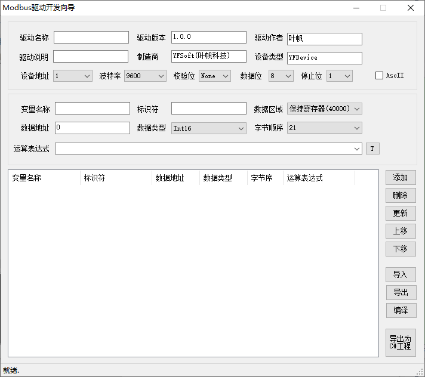
查温湿度传感器的说明书我们可以知道，温度和湿度在modbus寄存器的偏移地址是0和1（40000区），我们把标识符分别设置为“T”和“H”。看说明书我们可知，直接读取的值还不是温度和湿度，还需要除以10，所以我们配置一下运算表达式为“$Value/10.0”，其中$Value就是我们直接从指定地址区读到的原生值。
驱动名称和制造商等信息，可以根据实际进行填写就行，我们这里采用默认值。设备地址和串口参数，可以设置为该设备的默认参数。
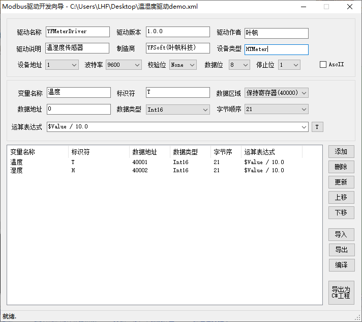
参数配置好后，我们单击“编译”按钮进行驱动文件编译，为了让YFIOs管理程序方便加载我们新编译的驱动，我们选择目录为YFIOsManager程序下的“Driver”目录。
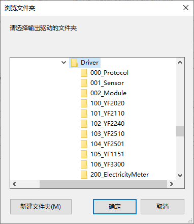
编译成功后，我们发现在指定的目录出现一个dll和pe文件，文件名就是我们配置的“驱动名称”。
我们打开YFIOsManager程序，单击“驱动列表”项，可以看到我们刚刚编译的驱动。
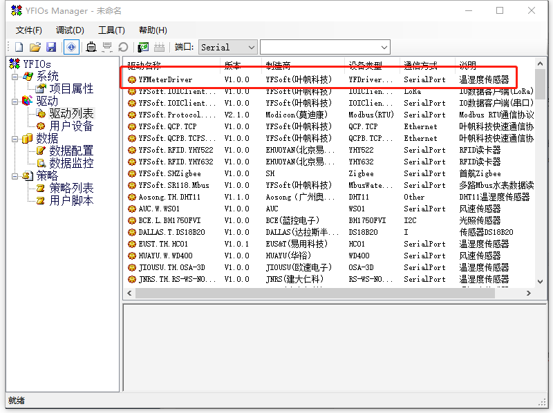
好，我们测试一下刚刚编译好的驱动，看看是否能正常工作。我们添加一个用户驱动，选择我们刚刚创建好的驱动。
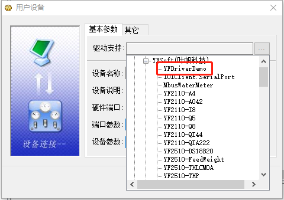
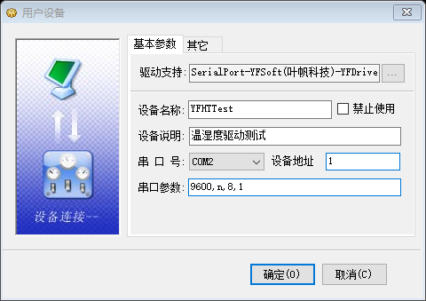
YF3300的RS485为COM2。配置好后，数据配置里面就会自动出来对应的变量来，如下图所示：
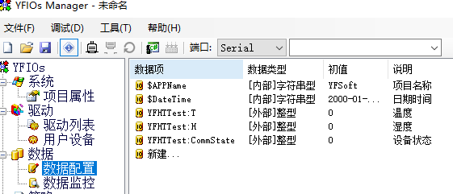
我们让YF3300接一个温湿度模块，把相关的组态配置部署到YF3300中去。
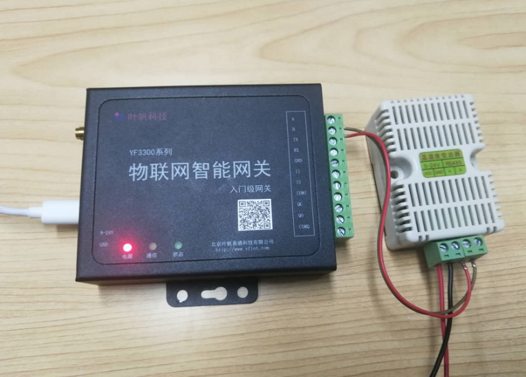
YF3300采购链接（最后一个颜色分类是YF3300网关）：
https://item.taobao.com/item.htm?spm=a1z10.1-c.w4004-10400358307.7.82854d48viZm7V&id=42910631014
部署运行后，我们在“数据监控”中看到温湿度已经可以正常读取了。
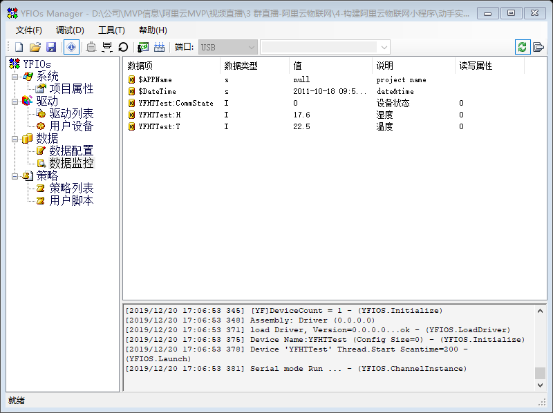
从以上可以看成，只要知道对应的属性地址，我们可以非常迅速的开发出一款比较实用的设备驱动。另外驱动的配置可以导出为xml文件，后续可以根据需要进行修改和扩展。如果要实现的驱动比较复杂，还可以导出为Visual Studio C#项目，可以更为自由的实现对应的驱动了。
单击“导出为C#工程”，选定好要导出的目录，然后就可以到一个完整的C#驱动程序了（一个驱动接口工程，一个驱动pe工程）。
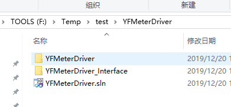
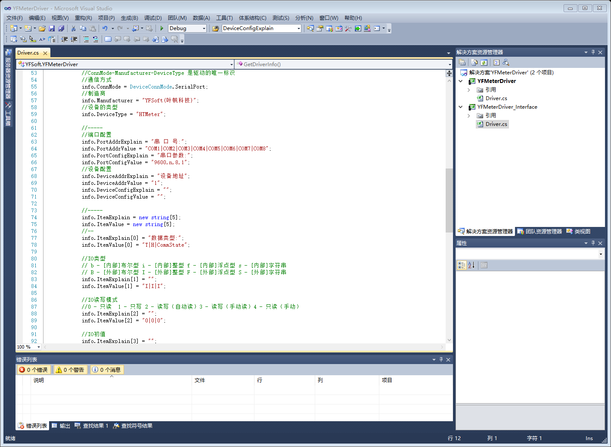
想体验阿里云IoT平台的网友，可以单击如下链接：https://dev.iot.aliyun.com/sale?source=deveco_partner_yefan